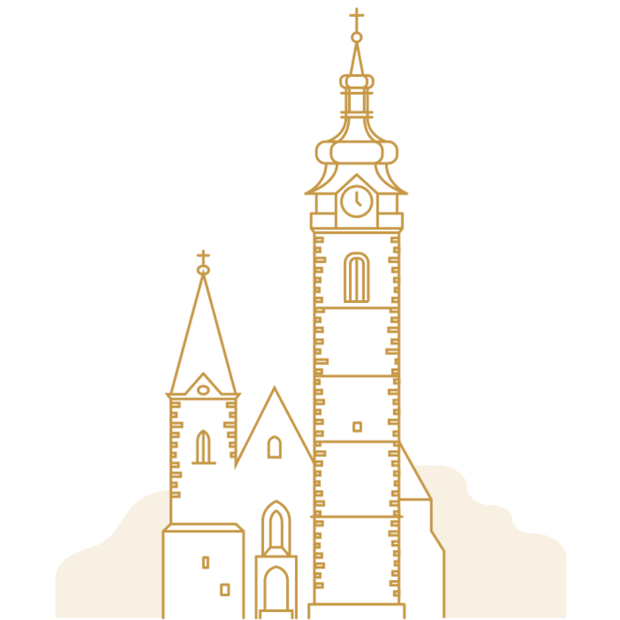
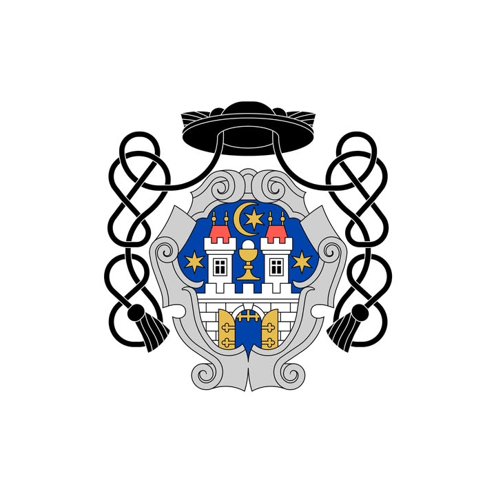
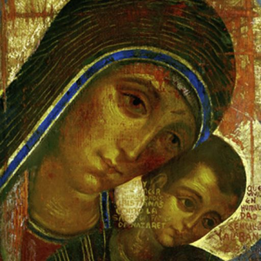
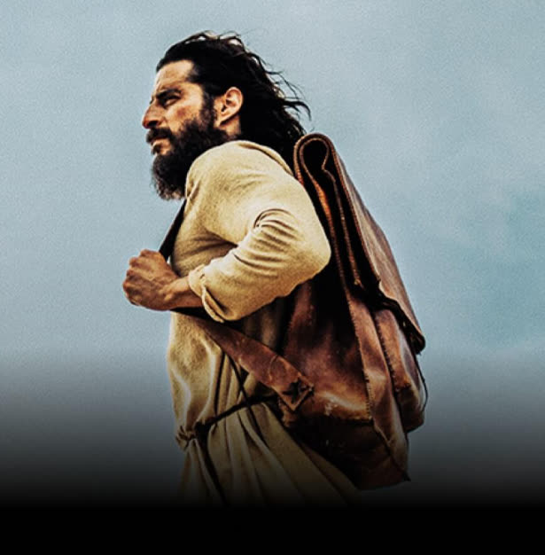
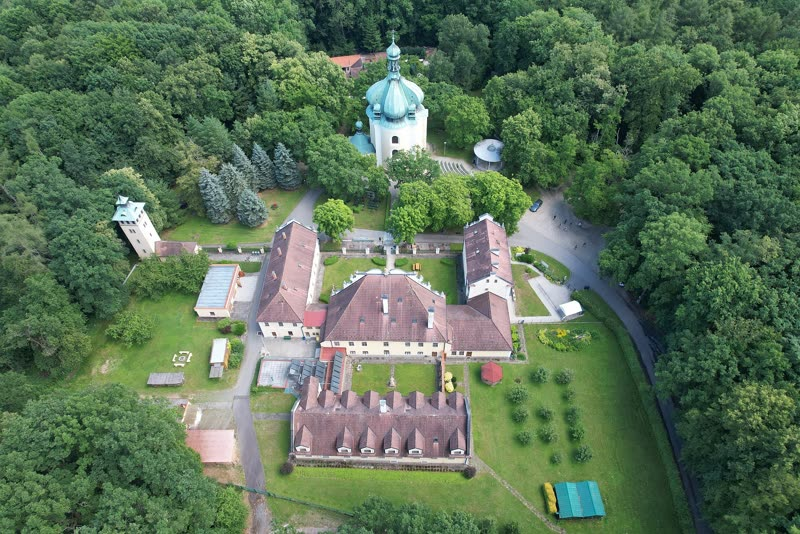

Věřím. Cestuji. Programuji.
aneb vše, co mohu nabídnout, na jednom místě…
O mně
Jiří Hronek
LinkedIn →
Cestování
Příspěvky se načítají přímo z mých blogů. Nový blog na profilu se zobrazí automaticky.
Načítám…
Programování
Moje veřejné projekty na GitHubu.
Načítám…
Věřím
Místa a společenství, která jsou mi blízká.

Farnost PísekWeb římskokatolické farnosti Písek.

Farnost Písek na FacebookuNovinky a život farnosti.

Neokatechumenátní cestaOficiální stránky Cesty (v automatickém českém překladu).

The ChosenSeriál o lidech, kteří se osobně setkali s Ježíšem. Ke zhlédnutí i s komentáři Libora Všetuly v Klubové zóně TV Noe.

LomecPoutní místo Lomec.
KDU-ČSL PísekStránky píseckých lidovců.